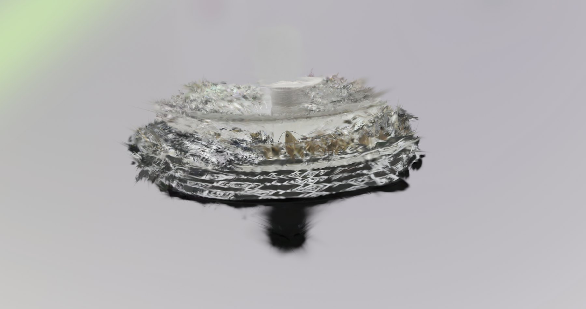
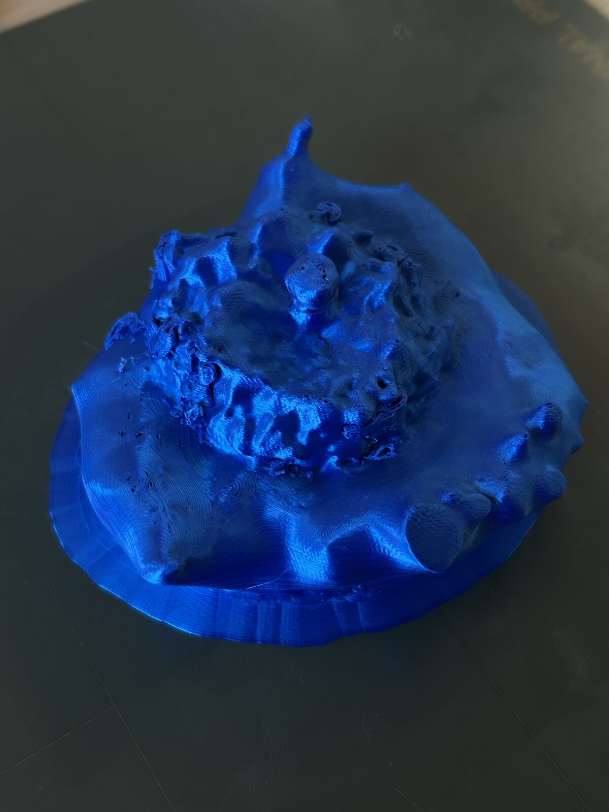
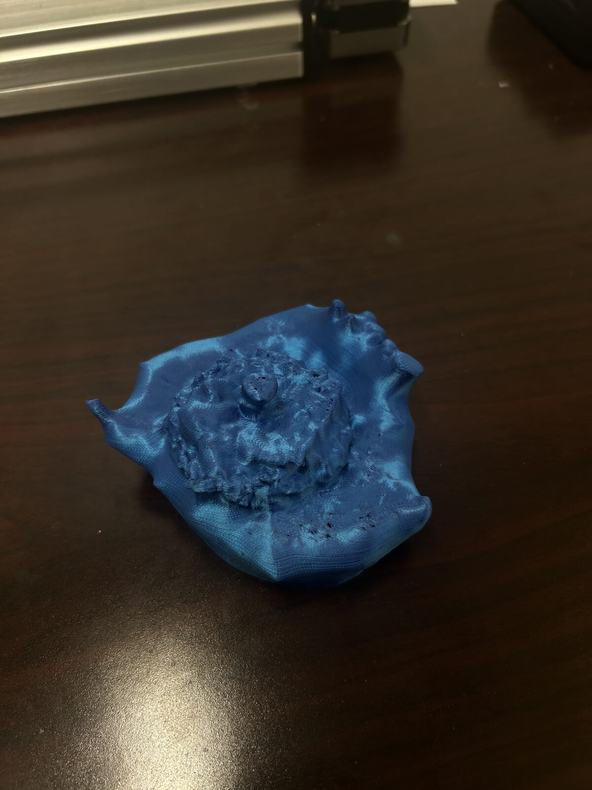
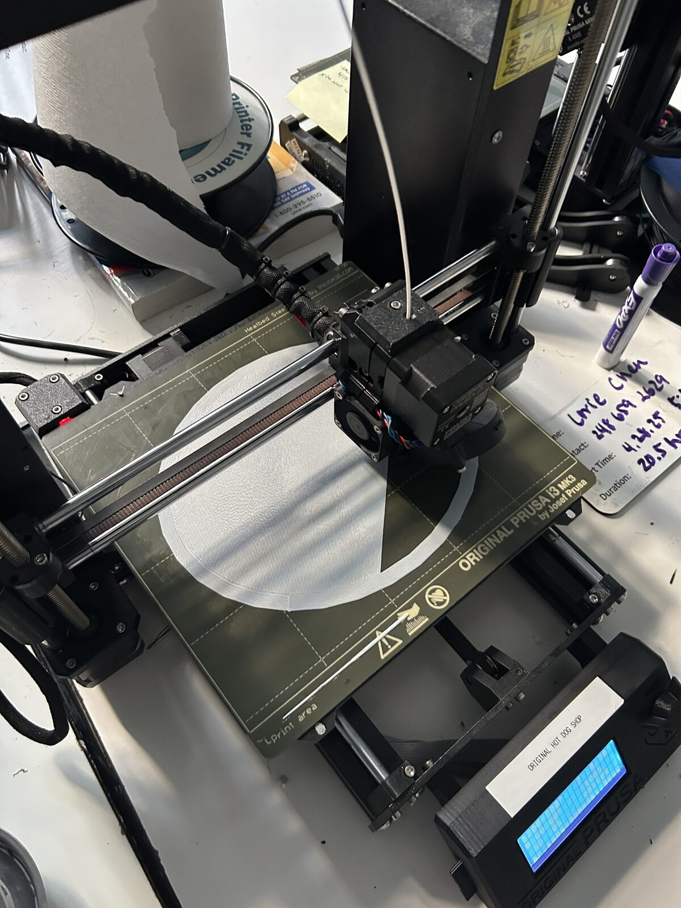
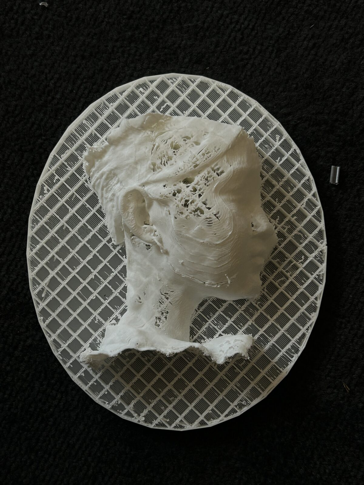
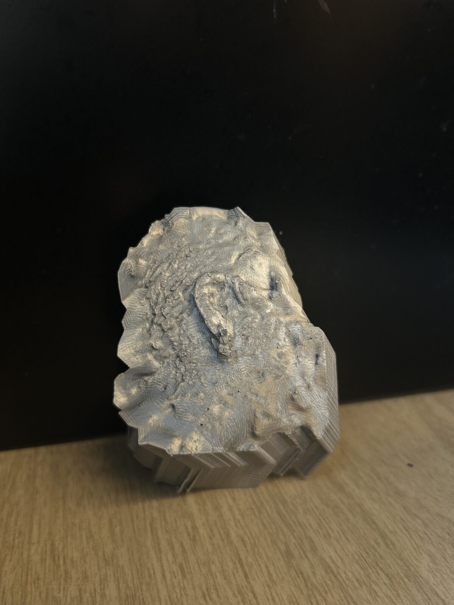
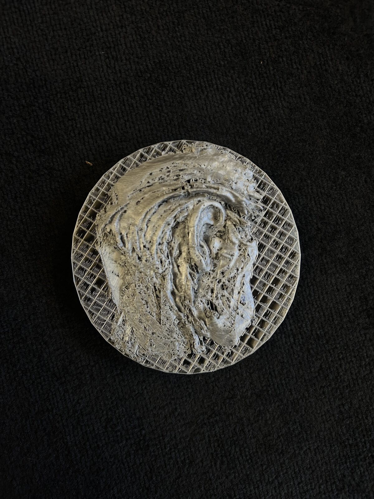
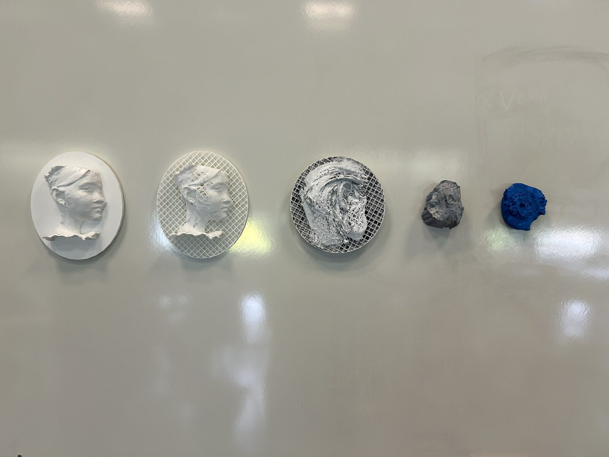
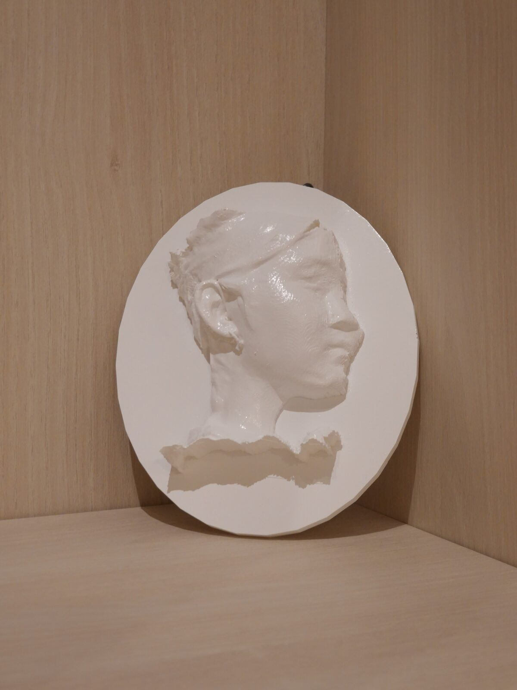
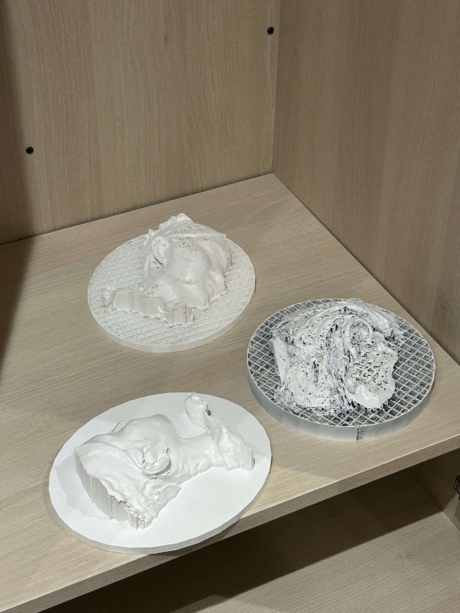

splat fabrication
Cameo portraits 3D printed from Gaussian splats, starting with one that failed.

This project came out of two things I couldn’t stop looking at. One was the cameo, and the bas-relief more generally: a portrait raised just off its ground, made to be held close and turned in the light. The other was a splat that failed.
While I was capturing specimens for dead things in jars, Polycam returned one jar as something unrecognizable. Instead of glass and fluid, it was a churned, organic mass that looked almost grown. My guess is that the structure-from-motion step (COLMAP) never aligned the cameras properly, so every view was pulling the scene in a slightly different direction.

I wanted to hold it. So I turned it into a mesh and 3D printed it, and the blue form below is that failure made physical.


What can a splat become?
That print raised a broader question: what kinds of meshes can you get out of a Gaussian splat, and where might a splat make a better capture, mesh or sculpture than a traditional 3D scan? A scanner aims for a correct surface. A splat is a cloud of soft, overlapping blobs, and converting it into a solid forces decisions about what counts as surface at all.
I made meshes from splats with Polycam and Kiri Engine, then repaired them in Blender until they were manifold (watertight, with no holes or self-intersections), which a print needs and which also matters for display.


Choosing a subject
The subject matters here. Cameos are intimate objects. They were often portraits of someone specific, made to be kept or given, so I captured people close to me: the side profile of my friend Emma, and the ear of my friend Sunny.
The two white prints are Emma; the silver prints are Sunny’s ear. In each test, the mesh carries something of the splat it came from. Holes open where the capture was thin, and soft edges fray. Some prints hold together as faces, and some dissolve back toward the failed jar I started with.


The final print is the cleanest: Emma in profile on an oval ground, close to a classical cameo. Next to the tests, you can see what it took to get there.


